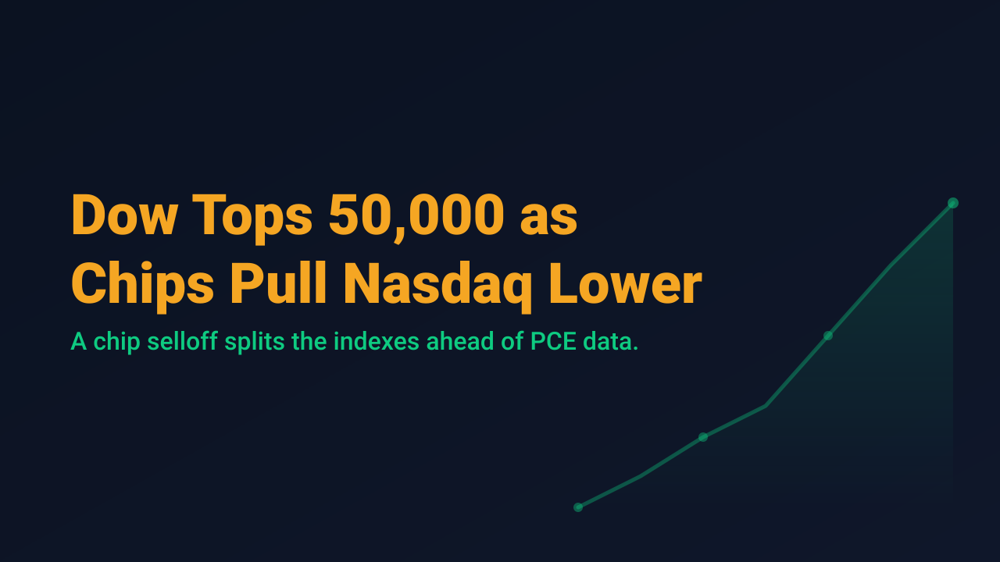
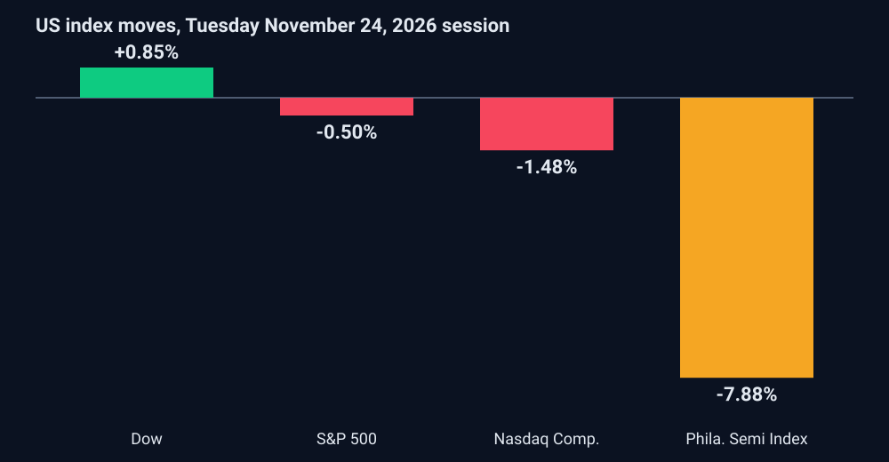

Dow Tops 50,000 as Chips Pull Nasdaq Lower

The Dow Jones Industrial Average closed at 50,018.70 on Tuesday, up 423.39 points or 0.85%, while the S&P 500 slipped 0.50% to 7,201.09 and the Nasdaq Composite fell 1.48% to 23,733.54, according to JournalArta and Zacks. The VIX closed at 26.15, per JournalArta, a level that signals traders are still paying up for protection.
The split came one session after a sharp rebound. JournalArta reports that the S&P 500 gained 4.73% and the Nasdaq 6.51% on Monday, so Tuesday's divergence read less like a new trend and more like a violent rotation inside a volatile tape. The cause was concentrated. HDFC Sky reports that the Philadelphia Semiconductor Index fell 7.88% to 8,832.50, with Micron down 11.28% and AMD down 8.96%. Zacks puts Nvidia's decline at 5.9%.
Capital did not leave equities; it moved. Zacks reports that Dollar Tree rose 11.2% after adjusted earnings of $1.16 per share against a $0.89 consensus, Abercrombie & Fitch rose 19.7% on earnings of $3.82 against $3.15, and Dick's Sporting Goods rose 14.6% on earnings of $1.94 against $1.38. Zacks also notes that the Conference Board's November consumer confidence reading came in at 103.3, against a revised 91.9 in October. Strength in retail and consumer names offset part of the damage in technology, which is how the Dow could finish at a level above 50,000 on a day the Nasdaq fell nearly one and a half percent.

The next catalyst is scheduled. October PCE inflation is due Wednesday morning, and TipRanks, citing Dow Jones polling, reports expectations of a 0.3% monthly increase in the headline reading and 3.8% year over year. For a swing trader, the practical issue is overnight gap risk: a position carried through the release is exposed to a reaction that no chart pattern can anticipate, and a day in which one sector fell nearly 8% shows how quickly correlations can change.
Tuesday offered a reminder that an index at a round-number milestone can coexist with a sharp drawdown in its fastest-moving sector. Conditions of this kind reward preparation over prediction: defined entries, defined exits, and position sizes that assume the next print may not cooperate.